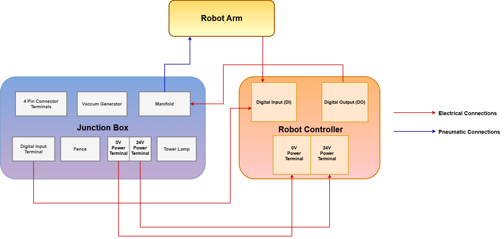
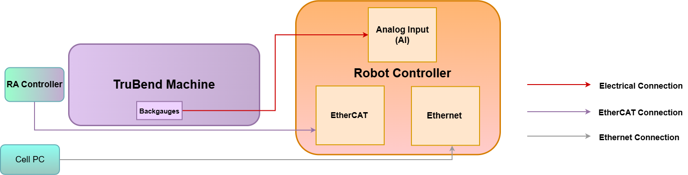
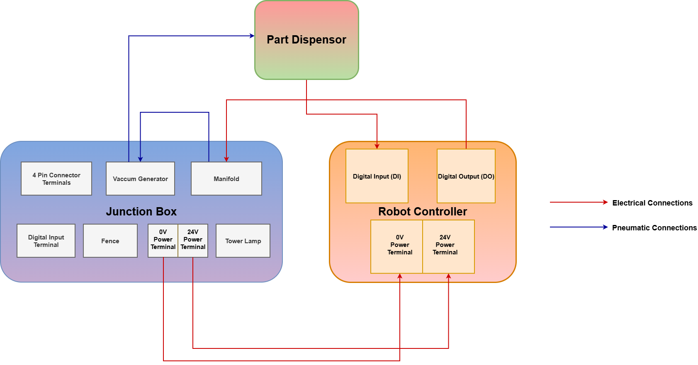
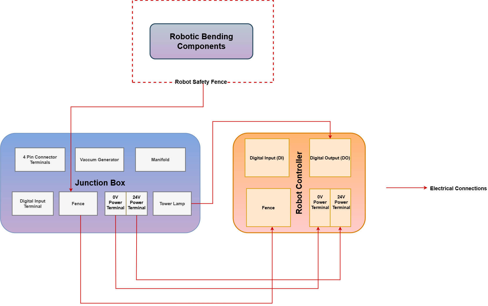

Field Elements Wired Connection Overview
Details given below are the physical connections between the robot controller and the field elements.
The specific connections for each field element are listed below. The table explains the IO connection address, the comment and the description of the connection. These IO comments can be written by the user in teach pendant.
| The connections are made via Digital Inputs and Outputs of the robot controller. The Digital Inputs and Digital Outputs has 32 physical connections (1-32) each. |
| All IO’s should be connected as mentioned in the tables below. Any changes in the connections may lead to malfunctioning of the system. If there is a need to change the connections, please make sure to update the same in the program logic as well. |
Robot Controller & Robot Arm Connection

Digital Inputs
| DI connection address | Comment | Signal Flow | Description |
|---|---|---|---|
8 |
Stack_Height_FB |
Gripper (Proximity feedback) → DI |
Feedback of proximity sensor for stack height detection. |
Digital Outputs
| DO connection address | Comment | Signal Flow | Description |
|---|---|---|---|
1 |
Pinch_PushBWD |
Combi gripper (Vaccum) → DO |
Signal to activate the push backward function of the combi gripper’s vaccum. |
2 |
Pinch_PushFWD |
Combi gripper (Vaccum) → DO |
Signal to activate the push forward function of the combi gripper’s vaccum. |
3 |
Pinch_GripClose |
Combi gripper (Jaw) → DO |
Signal to activate the grip close function of the combi gripper’s jaw. |
4 |
Pinch_GripOpen |
Combi gripper (Jaw) → DO |
Signal to activate the jaw open function of the combi gripper’s jaw. |
6 |
VacuumGrip_ENB |
DO → Manifold → Robot Arm |
Vaccum generator will get air flow from Manifold when this signal is active in DO. |
9 |
Vacuum_GripON\OFF |
DO → Robot Arm |
Signal to activate/deactivate the suction of the vaccum gripper. |
Robot Controller & Bending Machine Connection

Analog Inputs
DI connection address |
Comment |
Signal Flow |
Description |
1 |
Z1_Analog |
Bending Machine (Backgauge Z1) → AI |
Feedback of the Z1 probe’s potentiometer. |
2 |
Z2_Analog |
Bending Machine (Backgauge Z2) → AI |
Feedback of the Z2 probe’s potentiometer. |
EtherCAT connection is established between the robot controller and the bending machine for data communication.
Ethernet/IP connection is also established between the robot controller and Cell PC for file transfer and data communication.
Robot Controller & Part Dispenser Connection (Optional)

Digital Inputs
| DI connection address | Comment | Signal Flow | Description |
|---|---|---|---|
6 |
PDISP_PartPres |
Part Dispenser → DI |
Feedback signal from the part dispenser indicating the presence of a part. |
Digital Outputs
| DO connection address | Comment | Signal Flow | Description |
|---|---|---|---|
5 |
PDIS_ENB |
DO → Manifold → Part Dispenser |
Vaccum generator will get air flow from Manifold when this signal is active in DO. |
7 |
PDISP_UP |
DO → Part Dispenser |
Signal to move the part dispenser up. |
8 |
PDISP_DOWN |
DO → Part Dispenser |
Signal to move the part dispenser down. |
10 |
PDISP_VacuumON\OFF |
DO → Part Dispenser |
Signal to turn on/off vacuum suction of the part dispenser. |
Robot Controller & Safety Connections
Safety Fence Connection to Robot Controller

Fence’s feedback signals are connected to the robot controller’s safety port. The safety port is a dedicated connection point on the robot controller to receive signals from safety fence.
See Safety connection overview section for more details.
Tower Lamp Connection to Robot Controller
Tower lamp’s signals are connected to the robot controller’s IO to indicate whether the robot is working or in an error state or whether the robot is in teach mode or in auto mode.
Digital Outputs
| DO connection address | Comment | Signal Flow | Description |
|---|---|---|---|
11 |
Relay4 |
Tower Lamp → DO |
|
12 |
Relay5 |
Tower Lamp → DO |
|
13 |
Relay6 |
Tower Lamp → DO |
|
14 |
Relay1 |
Tower Lamp → DO |
|
15 |
Relay2 |
Tower Lamp → DO |
|
17 |
TL_Green |
Tower Lamp → DO |
|
18 |
TL_Red |
Tower Lamp → DO |
|
19 |
TL_Amber |
Tower Lamp → DO |